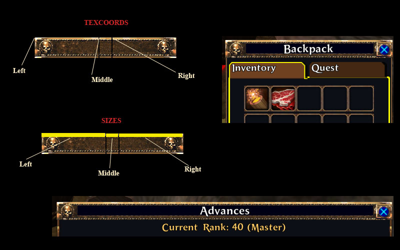

The HorizontalResizeImage allows you to create an image that will automatically resize to fit a window of any width.
| HorizontalResizeImage | The HorizontalResizeImage allows you to create an image that will automatically resize to fit a window of any width. |
| Implementation Details | The HorizontalImage requires a set of texture coordinates to specify the different portions of the image. |
| XML Definition | This is the HorizontalResizeImage xml definition. |
| XML Tag | |
| Required Attributes | Required for the window element to create itself properly. |
| texture | Name of the Ui Texture to use to create the tiled image.. |
| Optional Attributes | These are optional. |
| textureScale | The scale of the texture to be used for the image artwork. |
| reverseFill | When set, the image will tile from right to left, rather than left to right. |
| Required Elements | |
| Sizes | The dimensions in the texture for each tillable component of the image. |
| TexCoords | The texture coordinates for each component of the tile-able image. |
| TexSlices | The texture slice references for each component of the tile-able image. |
| Functions | The HorizontalResizeImage must be defined entirely in XML and does not have any run-time functions. |
The HorizontalImage requires a set of texture coordinates to specify the different portions of the image.
These are defined by the Sizes and TexCoords elements. See the following illustration for an example of how to determine the correct values. The texture shown on the left is used to top frame to the windows on the right.

This is the HorizontalResizeImage xml definition.
| XML Tag | |
| Required Attributes | Required for the window element to create itself properly. |
| texture | Name of the Ui Texture to use to create the tiled image.. |
| Optional Attributes | These are optional. |
| textureScale | The scale of the texture to be used for the image artwork. |
| reverseFill | When set, the image will tile from right to left, rather than left to right. |
| Required Elements | |
| Sizes | The dimensions in the texture for each tillable component of the image. |
| TexCoords | The texture coordinates for each component of the tile-able image. |
| TexSlices | The texture slice references for each component of the tile-able image. |
These are optional. You can use whichever apply to the HorizontalResizeImage you are creating.
The scale of the texture to be used for the image artwork. This is multiplied by the image’s <Size> to determine the texture dimensions.
A number value. (1.0 = 100%)
When set, the image will tile from right to left, rather than left to right.
A boolean value.
| ”true” | Tile right->left. |
| ”false” | Tile left->right. |
The dimensions in the texture for each tillable component of the image.
<Sizes left="10" middle="316" right="10" />
| left | The pixel width of the left end of the image. This is not resized. |
| middle | The pixel width of the middle tilable portion of the image. |
| right | The pixel width of the right end of the image. This is not resized. |
| left | 0 |
| middle | 0 |
| right | 0 |
The texture coordinates for each component of the tile-able image.
<TexCoords>
<Left x="120" y="604" />
<Middle x="130" y="604" />
<Right x="328" y="604" />
</TexCoords>
| Left | The top left corner of the image. (not tiled). |
| Middle | The coordinate used for the tile-able center of the image. |
| Right | The top right corner of the image. (not tiled). |
For all coordinates...
| x | 0 |
| y | 0 |
The texture slice references for each component of the tile-able image.
<TexSlices>
<Left id="LeftSlice" />
<Middle id="MiddleSlice" />
<Right id="RightSlice" />
</TexSlices>
| Left | The top left corner of the image. (not tiled). |
| Middle | The coordinate used for the tile-able center of the image. |
| Right | The top right corner of the image. (not tiled). |
For all slices...
id = “”